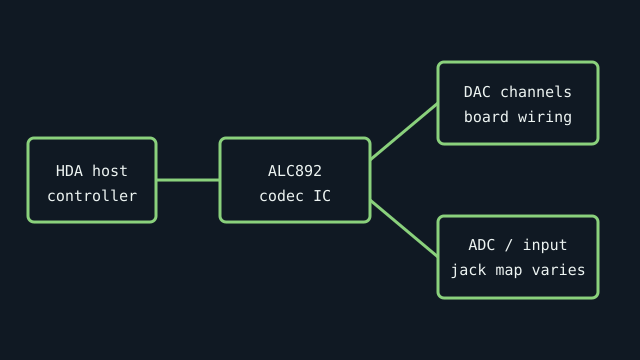

[ SEMICONDUCTOR // AUDIO CODEC ]
Realtek ALC892
A High Definition Audio codec IC commonly found on desktop motherboards. The codec’s nominal channel capability is not a promise that a particular motherboard routes every channel to rear-panel sockets.

Specifications
| Product ID | Realtek ALC892; verify complete package marking and suffix from the motherboard. |
|---|---|
| Host interface | Intel High Definition Audio (HDA) link to a compatible host controller; not a standalone PCI/USB sound card. |
| Codec / conversion | HD Audio codec with multi-channel DAC and stereo ADC paths; marketed as supporting 7.1-channel output. Sample rates, analog channel routing, jack retasking, and S/PDIF are platform/board implementation dependent. |
| Connectors / I/O | No external jacks on the IC itself. Board designers connect codec pins to rear/front-panel analog jacks, internal front-panel audio, and optional digital output. |
| Drivers / OS | Realtek distributes OS-specific PC Audio codec drivers through its official download library and motherboard makers. The board vendor’s package and OS support list take precedence. |
| Variant compatibility | Suffix/revision and host HDA controller matter. An ALC892-marked board does not guarantee the same jack count, amplifier, noise isolation, or driver features as another board. |
Service & preservation
Photograph the IC laser marking and motherboard model/revision together. For repair, use the host board schematic and codec datasheet pinout; the small QFN package is not a safe point for improvised probing. Preserve the exact vendor driver because jack-detection and retasking are board-specific.
Primary sources
- Realtek — PC Audio Codecs download libraryOfficial codec and software source; search the exact ALC892/host board package.
- Intel — High Definition Audio interface overviewHost-link standard context; motherboard schematics define the actual external I/O.